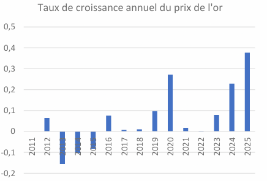
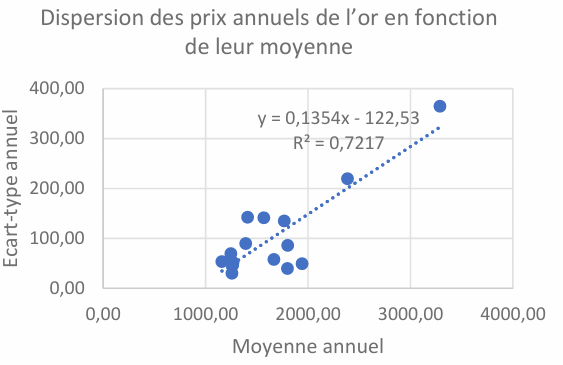
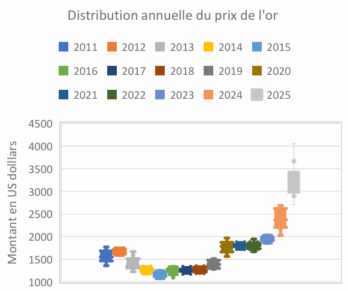
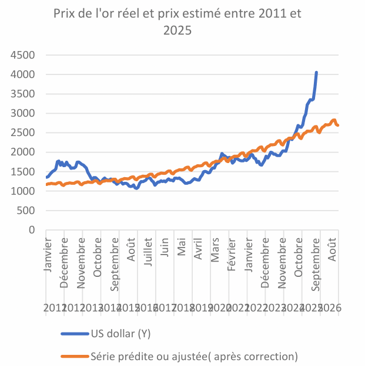

SAÉ 4.05 : Modélisation des Séries Temporelles
Contexte & Enjeux Économiques
Dans un écosystème financier mondial sujet à de fortes fluctuations, l'or s'impose comme l'actif de référence, agissant comme une valeur refuge face aux tensions géopolitiques, aux crises inflationnistes et aux doutes des marchés.
L'objectif de cette étude économétrique est d'analyser la chronique historique du cours de l'or (données mensuelles et trimestrielles issues du Fonds Monétaire International - FMI) sur une période s'étalant de 2011 à octobre 2025, afin d'extraire sa dynamique structurelle et d'établir des projections macro-économiques robustes pour l'année 2026.
Analyse Descriptive & Exploration de la Chronique
Une première approche statistique descriptive a permis de caractériser la distribution globale de la série temporelle :
Le coefficient de variation étant nettement inférieur à 0,5 ($0,32 \ll 0,5$), la série présente une dispersion modérée autour de sa moyenne. Sur l'ensemble de la période, le cours a connu une croissance majeure, se voyant multiplié par 2,1 entre son point le plus bas en 2015 et son sommet historique atteint en 2025.
Justification du Modèle Multiplicatif
L'analyse structurelle de la chronique a permis de valider l'orientation vers une décomposition de type multiplicative (Y_t = T_t * S_t * I_t) s'appuyant sur deux preuves méthodologiques majeures :
- Relation Moyenne / Écart-type : Le graphique croisant les écart-types annuels en fonction des moyennes fait ressortir un coefficient de détermination élevé (R^2 = 0,7217$). Cette corrélation directe prouve que la variabilité de la série s'accroît proportionnellement à la hausse de son niveau moyen.
- Stabilité de la saisonnalité : L'étude des boîtes à moustaches mensuelles indique la présence de fluctuations saisonnières légères mais très régulières (creux récurrents en avril-mai/juin et pics en septembre/octobre), modulant la tendance globale sans en perturber la dynamique de fond.
Modélisation de la Tendance : Sélection de la Forme Fonctionnelle
Pour isoler la composante de long terme (T_t), trois spécifications fonctionnelles ont été testées et comparées à l'aide du critère de la Somme des Résidus au Carré (SR) :
| Modèle Testé | Hypothèse Théorique | Somme des Erreurs au Carré (SR) | Statut |
|---|---|---|---|
| Modèle Linéaire | Progression constante et régulière | 27 737 303,56 | Rejeté |
| Modèle Exponentiel | Croissance proportionnelle auto-entretenue | 30 557 650,38 | Rejeté |
| Modèle Quadratique [t²] | Flexibilité, capture des accélérations/décélérations | 17 515 616,99 | Retenu (Ajustement Optimal) |
Le modèle quadratique s'impose nettement en affichant le résidu standard le plus faible du benchmark. Sa formulation mathématique intègre un terme en $t^2$ qui restitue avec une grande fidélité la courbure non linéaire de la trajectoire de l'or, invalidant de fait les trajectoires strictement rectilignes ou purement exponentielles.
Recomposition et Prévisions pour 2026
Une fois la tendance quadratique validée, les coefficients saisonniers ont été extraits puis normalisés (leur moyenne s'établissant à un niveau très stable de 1,01). La phase de prévision a été opérée en projetant la tendance extrapolée et en y appliquant ces coefficients harmonisés.
L'évaluation de la qualité d'ajustement sur l'historique valide la robustesse du modèle avec une somme des erreurs au carré finale de **17 174 946,94**. Ce calibrage a permis de générer les prévisions mensuelles complètes pour l'année 2026, capturant de manière synchrone la poussée de fond et les effets saisonniers propres à chaque mois.





Limites du Modèle & Recommandations Économétriques
Si le modèle quadratique s'avère hautement performant à court terme, sa projection à long terme reste dépendante d'une évolution régulière. Il ne peut anticiper les ruptures structurelles ou les chocs de marché (crises géopolitiques majeures, pivots des taux d'intérêt des banques centrales).
Afin de renforcer ces travaux, la confrontation des échelles mensuelles et trimestrielles a validé la cohérence macro-économique des conclusions. Pour aller plus loin, nous recommandons l'exploration de modèles multivariés (ARIMAX ou VAR) incluant des variables exogènes explicatives fortes telles que l'indice d'inflation ou les rendements des obligations d'État.
Consulter le Modèle de Prévision & Données FMI
⬅ Retour au portfolio